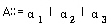
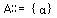
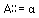
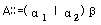
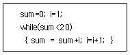

사무자동화산업기사 (2005-08-07 기출문제)
1과목: 사무자동화 시스템
1. 운영체제(OS)가 하드웨어를 관리하는 대상이 아닌 것은?
- 주기억장치 관리
- 중앙처리장치 관리
- 입출력장치 관리
- 레코드 관리
(정답률: 81%)

2. 사무자동화를 위한 선결과제로 볼 수 없는 것은?
- 사무환경의 정비
- 사무관리제도의 정비
- 조직 및 체제의 재정비
- 기존컴퓨터 전체를 대형컴퓨터로 교체
(정답률: 91%)
3. OS(Operating system)의 목적으로 가장 적합한 것은?
- 원시프로그램을 기계어로 번역하는 프로그램이다.
- 사용자가 작성한 프로그램을 기계가 알 수 있는 언어로 번역해 주는 것이다.
- 시스템의 신뢰성, 호환성, 적응성 등을 실현시켜 작업의 처리를 원활하게 해주는 것이다.
- 제어프로그램의 감시하에 특정 문제를 해결하기 위한 것이다.
(정답률: 85%)
4. CPU의 부담을 덜기 위해 I/O 장치와 기억장치 간의 데이터를 주고받을 수 있어서 시스템 전체의 입출력 속도를 높이는데 가장 효과가 있는 것은?
- 채널(Channel)
- 버퍼(Buffer)
- 캐시메모리(Cache Memory)
- 가상기억장치(Virtual Storage)
(정답률: 55%)
5. 다음 중 분산처리시스템의 장점 요소로 볼 수 없는 것은?
- 현장 적응성 증대
- 신뢰성 증진
- 자원 공유성 증대
- 호환성 증대
(정답률: 47%)
6. 데이터베이스 관리시스템(DBMS)의 특징이 아닌 것은?
- 자료 중복의 최소화
- 자료의 공동 이용
- 자료의 무결성 유지
- 자료처리 방법의 단순화
(정답률: 69%)
7. Zisman의 사무자동화 정의에 포함되지 않는 것은?
- 컴퓨터 기술
- 통신기술
- 인터넷 기술
- 시스템 과학
(정답률: 70%)
8. 사무자동화 발전을 위해서 컴퓨터의 비전문가도 쉽게 프로그램을 작성할 수 있도록 하기 위한 대화형 기법을 도입한 언어는?
- 간이 언어
- 고급 언어
- 응용 언어
- 컴파일 언어
(정답률: 52%)
9. 5.25인치 2HD(2 Sur face High density double Track) 플로피디스크의 Track수가 80개, Track당 섹터수가 15개, 섹터 당 바이트 수가 512byte 일 때, 이 플로피 디스크의 기억 용량은?
- 1,47,560 바이트
- 1,228,800 바이트
- 737,280 바이트
- 614,400바이트
(정답률: 68%)
10. 컴퓨터를 이용하여 마이크로필름을 고속자동으로 검색해주는 것은?
- 마이크로필름(Microfilm)
- COM(Computer Output Microfilm)
- CAR(Computer Assisted Retrieval)
- 광디스크 시스템
(정답률: 53%)
11. MPEG(Moving Picture Expert group)의 설명으로 맞지 않은 것은?
- 정지영상 압축에 대한 ISO국제 표준안
- 동영상 압축에 대한 ISO국제 표준안
- 손실압축 기법에 포함
- MPEG-1, MPEG-2, MPEG-4 등이 해당됨
(정답률: 81%)
12. 광디스크에 대한 다음 설명 중 알맞지 않은 것은?
- 광디스크는 정보를 읽어 들이는데 레이저 빔을 이용한다.
- 기록위치에 관계없이 랜덤 액세스가 가능하여 정보를 빨리 읽을 수 있다.
- CD-ROM과 같은 저장매체에 기록한다.
- 자화의 원리를 적용한 것이며, 비교적 장기적인 보존이 어렵다.
(정답률: 82%)
13. 사무자동화 수행방식의 종류에 해당하지 않은 것은?
- 전사적 접근방식
- 상향식 접근방식
- 하향식 접근방식
- 계층별 접근방식
(정답률: 72%)
14. 압축 기법 중 멀티미디어 정보에서 의학용 영상 등과 같은 정확성이 요구되는 데이터들의 압축에 주로 사용되는 비트 존 압축기법이라 하는 것은?
- 손실 압축
- 무손실 압축
- 영상 압축
- 응향 압축
(정답률: 88%)
15. 다음 중 데이터 접근속도가 빠른 것부터 차례로 나열된 것은?
- 주기억장치→보조기억장치→CPU→Cache
- CPU→주기억장치→보조기억장치→Cache
- CPU→Cache→주기억장치→보조기억장치
- Cache→주기억장치→CPU→보조기억장치
(정답률: 71%)
16. 중앙처리장치의 연상장치 구성이 알맞게 되어 있는 것은?(문제오류로 모두 정답 처리한 문제입니다. 여기서는 1번을 정답으로 합니다.)
- 가산기, 누산기, 레지스터, 카운터
- 가산기, 누산기, 어드레스, 카운터
- 제어기, 누산기, 입출력기, 모뎀기
- 누산기, 레지스터, 어드레스, 가산기
(정답률: 90%)
17. DBMS 모델의 종류가 아닌 것은?
- 관계 모델
- 링크 모델
- 계층 모델
- 객체 지향 모델
(정답률: 54%)
18. 무선인터넷 모바일 상거래의 특징과 가장 관계없는 것은?
- 이동성이 있어 사용하기에 편리하다.
- 시간과 공간의 제약을 탈피하여 필요한 정보를 얻을 수 있는 편리성이 있다.
- 개인화된 맞춤서비스가 가능하다.
- 대용량의 마케팅광고 등과 같은 컨텐츠 정보를 다양한 통신 네트워크에서 이용한 상거래이다.
(정답률: 63%)
19. 작업이나 공동 목표에 참여하는 다양한 작업 그룹을 원하는 응용시스템은?
- 데이터베이스 관리시스템(DBMS)
- 운영체제(Operating system)
- 그룹웨어 시스템(Groupware system)
- 입출력 시스템(I/O system)
(정답률: 87%)
20. 사무자동화를 부분적으로 구현할 대, 고려할 상황과 가장 관계가 없는 것은?
- 요구가 큰 부분을 먼저 추진한다.
- 추진하기 쉬운 업무부터 우선 추진한다.
- 기획부서부터 먼저 추진한다.
- 전시효과가 큰 업무부터 먼저 추진한다.
(정답률: 71%)
2과목: 사무경영관리 개론
21. 프로그램 저작권은 언제부터 발생하는가?
- 프로그램이 실용화된 때로부터
- 프로그램이 창작된 때로부터
- 프로그램이 등록된 때로부터
- 프로그램이 공고된 때로부터
(정답률: 78%)
22. 다음 중 조사·검사·조회 혹은 평가 등의 방법으로써, 무질서하게 행해지는 산발적인 체크 정도이거나 혹은 일정한 룰에 기초한 표본 조사인 사무통제 방법은?
- 집중화
- 감사
- 예산
- 절차
(정답률: 86%)
23. 정부에서 국가기관 ·지방자치단체 등의 정보화촉진을 지원하고, 정보화 관련 정책개발을 지원하기 위한 기관으로서 설립한 기구는?
- 한국정보보호센터
- 한국전산원
- 국가전산망진흥협회
- 한국정보통신진흥원
(정답률: 38%)
24. 사무실을 너무 세분화하는 것보다는 여러 과를 한 사무실에 배정하여 사용하는 것이 바람직하다고 생각하는 사무실의 배정 방식은?
- 대사무실주의 배치
- 관련 부서의 인근 배치
- 업무처리 흐름에 따른 직선적 배치
- 실무자 중심의 사무실 배치
(정답률: 76%)
25. “현실적으로 달성 가능한 표준”을 설명한 것이 아닌 것은?
- 최상의 작업환경 속에서 달성 가능한 표준
- 보통의 작업자들이 열심히 노력하기만 하면 달성 가능한 표준
- 작업이나 작업환경을 과학적으로 분석하여 엄격하지만 달성 가능한 표준
- 근로자에게 동기를 부여할 수 있고 객관적으로 성과를 평가할 수 있는 표준
(정답률: 65%)
26. 열람 제한자료에 관한 설명 중 가장 합당한 것은?
- 열람을 제한할 수 없는 자료를 말한다.
- 자료가 한정된 부수만 발행되기 때문에 복사나 열람이 가능한 자료이다.
- 열람과 복사를 일정 부수만 제한하는 자료를 말한다.
- 열람을 제한할 필요가 있다고 인정하는 자료에 대하여 열람 또는 복사를 제한할 수 있다.
(정답률: 88%)
27. 행정정보통신망에 관한 내용으로 틀린 것은?(문제오류로 3,4번을 정답 처리한 문제입니다. 여기서는 1번을 정답 처리 합니다.)
- 국가 및 지방자치단체의 기관 간에 이용한다.
- 행정자치부 및 지방자치단체가 시설한다.
- 이용료는 무료이다.
- 종합정보통신망 (ISDN)이다.
(정답률: 82%)
28. 다음 중 사무계획화를 가장 올바르게 설명한 것은?
- 사무계획화는 기업의 모든 계층에 필요한 것은 아니고 특정한 층인 경영진에 필요로 함
- 사무계획화는 기업경영에 필요한 사무관리 목표를 정한 후, 그것을 효과적으로 수행할 수 있도록 하고자 함
- 사무계획화의 기본 내용은 사무 인력을 예측하여 미리 예산을 확정하고자 하는 것임
- 사무계획화의 기본 내용은 정보만을 지속적으로 가공하여 생산하는 것임
(정답률: 83%)
29. 9 다음 중 우리나라의 일반자료 분류방법은 ?
- 한국 이진분류법
- 한국 팔진분류법
- 한국 십진분류법
- 한국 십육진분류법
(정답률: 85%)
30. EDI를 구성하고 있는 기본요소와 가장 거리가 먼 것은 ?
- 하드웨어
- 네트워크
- EDI 소프트웨어
- 데이터베이스
(정답률: 64%)
31. 과학적 사무관리가 추구하는 3S가 아닌 것은?
- 표준화(Standardization)
- 신속화(Speed)
- 간소화(Simplification)
- 전문화(Specialization)
(정답률: 71%)
32. 사무업무를 사무대행사에 의해 처리하는 이유로 적합하지 않은 것은 ?
- 위험분산
- 타산상의 이점
- 잉여인력의 조정
- 기술 및 능력의 보완
(정답률: 64%)
33. “경영이 목적을 결정하는 기능이라면 관리는 그 목적을 지향하여 노력하는 기능이다” 라고하여 양자를 구분하여 설명한 학자는?
- 맥도노우(McDonough)
- 포레스터(Forrestsr)
- 셀든(O. Sheldon)
- 스갠란(Scanlan)
(정답률: 46%)
34. 다음 중 러핑웰과 획스의 사무분류를 틀리게 설명한 것은?
- 사무는 조직구성원이 근무하는 과정에서 처리하는 일로서, 조직체를 전제로 한다.
- 사무실이 더 이상 폐쇄된 공간으로서의 의미가 아닌 것처럼 사무도 반드시 사무실내에서 이루어지는 것은 아니다.
- 사무는 조직체의 목적을 달성하기 위하여 관리에 필요한 정보를 만드는 작업이다.
- 사무는 여러 가지 형태로 일의 내용을 기록하지만, 일의 수행 과정에서 필요한 사람을 만나 면담하지는 않는다.
(정답률: 80%)
35. 다음 중 사무표준화의 목적과 가장 관계가 없는 것은 ?
- 관리자가 사무원들을 감독 및 통제하고 사무용어 등의 표준화에 기하고자 함
- 직원들 간의 공동 관심사에 대한 이해를 촉진과 생산성향상으로 비용절감에 기하고자 함
- 직원들의 사기를 향상시키고 직원들의 능력별로 활용하고자 함
- 직원들의 근무환경과 수입증대를 위한 기업 내 내규로써 단기간에 검토되어 모든 직원이 따르도록 하여여함
(정답률: 80%)
36. 사무조직화의 일반원칙을 가장 적합하게 설명한 것은?
- 조직을 효율적으로 관리하기 위한 일련의 계통이 설정되어, 그 책임과 권한이 완전하게 행사되어야 한다.
- 할당된 직무는 충분히 많아야 하며, 책임이 상호간 중복 되어야 한다.
- 직원 각자의 책임을 확실히 정하기 위하여, 위임을 제한하여야 한다.
- 한 사람의 관리자가 직접 감독할 수 있는 부하 직원의수나 조직의 수는 관리자의 능력에 따라 제한이 없다.
(정답률: 79%)
37. 라인 조직의 지휘·명령의 통일성을 유지하면서 전문화의원리를 살리기 위하여 스텝 제도를 절충시킨 형태로 에머슨식 조직이라고도 하는 것은?
- 사업부제 조직
- 매트릭스 조직
- 직계참모 조직
- 직능별 조직
(정답률: 64%)
38. TV전파의 사이를 이용해서 문자나 조형의 정보를 보내는 미디어는?
- Teletext
- CATV
- COM
- CAR
(정답률: 81%)
39. 다음 중 MIS(경영정보시스템)에 대한 설명으로 가장 관계가 먼 것은?
- MIS는 기업의 전략, 계획, 조정, 관리, 운영 등의 결정을 보조하는 특징을 갖고 있다.
- MIS는 창조적이고 지적인 공학과 관계없는 프로그래밍을 통한 단순 업무 전산화를 말한다.
- MIS의 전문성은 기업의 업무를 분석하고 기업경영을 진단하는 능력이다.
- MIS는 분석과 진단에 의해 기업업무의 정보요구가 정의 되어야 하고, 정의된 정조를 효율적으로 처리할 수 있는 시스템을 개발하고 관리하는 특징을 갖고 있다.
(정답률: 89%)
40. 사무량을 측정하는 방법에는 여러 가지가 있다. 가장 일반적으로 알려진 관측법으로 소요시간을 측정하여 여기서 얻은 수치로써 표준시간을 계정하는 방법은?
- stop watch 법
- work sampling 법
- standard data 법
- predetermined time standard 법
(정답률: 56%)
3과목: 프로그래밍 일반
41. 어떤 변수의 명칭과 그 메모리 주소, 데이터형 또는 실제 값을 연결하는 것을 의미하는 것은?
- 모듈
- 시뮬레이션
- 클래스
- 바인딩
(정답률: 66%)
42. C언어의 관계연산자 중“ 같지 않다”의 의미를 갖는 것은?
- ! =
- < >
- < =
- >> =
(정답률: 83%)
43. 두 모듈이 같이 실행되면서 서로 호출하는 형태를 무엇이라 하는가?
- 라이브러리
- 코루틴
- 부프로그램
- 함수
(정답률: 72%)
44. C언어에서 16진 정수를 출력하기 위한 변환 문자의 사용으로 옳은 것은?
- %x
- %d
- %s
- %h
(정답률: 64%)
45. 다음 구문 중 반복을 나타내는 것은?




(정답률: 80%)
46. 단항 연산자에 해당하지 않는 것은?
- and
- complement
- move
- shift
(정답률: 78%)
47. 로더의 기능이 아닌 것은?
- 번역
- 할당
- 연결
- 재배치
(정답률: 76%)
48. 기계어에 대한 설명으로 옳지 않은 것은?
- 2진수 0과 1만 사용하여 명령어와 데이터를 나타낸다.
- 컴퓨터가 직접 이해할 수 있어 실행 속도가 빠르다.
- 모든 기계에서 공통으로 사용 가능하여 호환성이 높다.
- 전문적인 지식이 없으면 이해하기 힘들다.
(정답률: 71%)
49. C언어에서 while 문이 수행될 때, 중괄호로 둘러싸인 while 문의 몸체는 몇 번 수행되는가?

- 4
- 5
- 6
- 7
(정답률: 54%)
50. 원시프로그램을 컴파일러가 수행되고 있는 컴퓨터의 기계어로 번역하는 것이 아니라, 다른 기종에 맞는 기계어로 번역하는 것은?
- 프리프로세서
- 인터프리터
- 로더
- 크로스 컴파일러
(정답률: 69%)
51. 객체 지향 언어에서 공통된 속성과 행위를 갖는 객체들의 집합을 의미하는 것은?
- 메시지
- 클레스
- 메소드
- 상속
(정답률: 73%)
52. C 언어에서 선언하는 자료형이 아닌 것은?
- float
- double
- int
- character
(정답률: 77%)
53. C 언어에서 연산문의 표현이 옳지 않은 것은?
- y=a%b
- y+=a
- y=a**2
- y<<2
(정답률: 60%)
54. 다음 프로그램언어의 문장구조 중 성격이 다른 하나는 ?
- while(expression) statement;
- for(expression-1; expression-2; expression-3)statement
- if(expression) statement-1; else statement;-2;
- do ｛statement;｝while(expression);
(정답률: 67%)
55. C 언어에서 입출력 명령이 잘못된 것은?(문제오류로 모두 정답 처리한 문제입니다. 여기서는 1번을 정답 처리 합니다.)
- scanf("%3d", a);
- getchar();
- putchar(a);
- printf("%5D\n", a);
(정답률: 87%)
56. C언어에서 사용되는 예약어가 아닌 것은?
- case
- switch
- virtual
- enum
(정답률: 53%)
57. 동적(실행시간)형 검사에 대한 설명으로 옳지 않은 것은?
- 프로그램 설계시 융통성을 준다.
- 프로그램이 수행되는 과정내에 자료형을 변경할 수 있다.
- 대화형언어에 적합하다.
- 프로그램 수행 중에 형 정보를 유지할 필요가 없다.
(정답률: 75%)
58. 프로그램 개발과정에서 프로그램 안에 내재해 있는 논리적 오류를 발견하고 수정하는 작업은?
- 컴파일
- 로딩
- 코딩
- 디버깅
(정답률: 90%)
59. C 언어에서 어떤 수식을 다른 데이터 형으로 바꾸고 싶을 때 사용하는 연산자는?
- 산술 연산자
- 관계 연산자
- 논리 연산자
- 캐스트 연산자
(정답률: 51%)
60. C언어에서 저장클래스를 명시하지 않은 변수는 기본적으로 어떤 변수로 간주되는가?
- global
- extern
- auto
- local
(정답률: 70%)
4과목: 정보통신 개론
61. 다음 중 정보화 사회에서 정보화란 의미를 가장 잘 표현한 것은?
- 정보통신기기의 생산 활동을 말한다.
- 정보의 처리 기술을 높이는 활동을 말한다.
- 정보의 생성, 가공, 축적 및 활용 등의 정보 행위를 의도적으로 행하여 그 유용가치를 높이는 활동이다.
- 컴퓨터를 이용한 정보의 처리 활동을 말한다.
(정답률: 83%)
62. 변조속도가 800[Baud]이고, 8상 위상변조를 한다고 할 때 이 전송회선의 데이터 신호 속도는 변조속도의 몇 배인가?
- 1 배
- 2배
- 3배
- 8배
(정답률: 69%)
63. OSI 7계층 중에서 종점 간(End-to-End)에 신뢰성 있는 데이터 전송을 제공하여, 종점 간 에러복구와 흐름제어를 담당하는 계층은?
- 데이터링크 계층(Data link Layer)
- 네트워크 계층(Network Layer)
- 트랜스포트 계층(Transport Layer)
- 세션 계층(Session Layer)
(정답률: 55%)
64. TCP/IP 상에서 운용되는 응용 서비스가 아닌 것은?
- FTP(File Transfer Protocol)
- Telnet
- DSU(Digital Service Unit)
(정답률: 67%)
65. ISO에서 제정한 OSI 7레벨 계층 중 최상위계층에 속하는 것은?
- Application Layer
- Presentation Layer
- Session Layer
- Physical Layer
(정답률: 66%)
66. LAN에서 사용거리의 확장에 사용될 수 있는 것이 아닌 것은?
- adapter
- Repeater
- Gateway
- Bridge
(정답률: 59%)
67. 2진 직류신호를 전송로에 적합한 디지털 신호레벨로 변환 시킨 후에 동기화하는 신호변환기는 ?
- CCU
- DTE
- DSU
- MODEM
(정답률: 49%)
68. 8 통신 프로토콜(Protocol)의 설명 중 가장 적합한 것은?
- 회선이 접속되어 있는 단말장치를 중앙의 컴퓨터가 제어하기 위한 프로그램
- 데이터의 오류나 정정을 검출하기 위한 에러제어방식
- 컴퓨터 간 또는 단말기 간 에러 없이 효율적인 정보를 주고받기 위해 설정한 통신규칙
- 데이터의 동기방식을 결정하기 위한 데이터 구성 모델
(정답률: 68%)
69. 데이터 에러제어방식인 CRC방식과 관계없는 것은?
- HDLC에서 사용
- 전진에러제어 방법
- 생성다항식을 사용
- FCS를 사용
(정답률: 49%)
70. 메시지 처리시스템(Message Handling System)이 제공하는 기본적인 서비스는?
- 전자우편
- 팩시밀리
- 텔렉스
- HDTV
(정답률: 76%)
71. LAN에서 사용하는 통신망구성 Toplogy로서 거리가 먼 것은?
- 점대점 접속(1:1)
- 버스형
- 링형
- 스타형
(정답률: 81%)
72. ISDN(Intergrated Service Digital Network)의 특징에 대한 설명으로서 옳지 않은 것은?
- 음성 및 비음성 등의 각종 서비스를 하나의 통신망에 통합해서 처리한다.
- 기존 회선교환 망이나 패킷교환망도 이용할 수 있다.
- 가입자와 통신망 사이에 각종 서비스를 제공하기 위해 반드시 복수의 회선이 이용된다.
- 64[kbps] 트래픽을 기본 사용자 서비스로 제공한다.
(정답률: 63%)
73. ISDN의 사용자 인터페이스 채널구조에서 기본 액세스와 기본 전송량은?
- (B +D),(B=64[Kbps] D=16[Kbps])
- (2B +D),(B=64[Kbps] D=16[Kbps])
- (B +2D)(B=16[Kbps] D=64[Kbps])
- (2B +2D)(B=16[Kbps] D=64[Kbps])
(정답률: 64%)
74. 데이터통신시스템의 데이터 전송계와 가장 관련이 없는 것은?
- 변복조장치
- 데이터 전송회선
- 중앙처리장치
- 통신제어장치
(정답률: 77%)
75. 유선계 뉴미디어에 속하지 않은 것은?
- CATV
- HDTV
- Videotex
- Teletex
(정답률: 45%)
76. 다음 중 패킷교환망의 주요 기능과 관계없는 것은?
- 경로선택 제어
- 모뎀 제어
- 순서 제어
- 흐름(flow)제어
(정답률: 67%)
77. 패킷교환망에서 전송코자 하는 Data를 패킷단위로 분할 및 재조립하는 기능을 수행하는 것은?
- PAD
- CCU
- MODEM
- DSU
(정답률: 62%)
78. 송신측에서 1개의 프레임을 전송한 다음 수신측에서 오류의 발생을 점검하여 ACK 또는 NAK를 보내올 때까지 기다리는 방식은?
- 전진 오류 정검
- 적응적 ARQ
- 연속적 ARQ
- 정지 대기 ARQ
(정답률: 78%)
79. 에러 제어 방식으로 수신측에서 잉여 비트의 규칙성을 확인하여 규칙이 맞지 않으면 전송 시스템에서 에러가 발생한 것으로 보아 수신된 정보를 무시하고 재전송을 송신측 요구하는 방식은?
- FEC
- CRC
- ARQ
- LRC
(정답률: 63%)
80. 거리에서 전기나 수도, 가스 등의 사용량을 수시로 검침하여 자동으로 계산해 주는 원격검침 시스템은?
- TMS(Tele-Metering System)
- ARS(Automatic Response System)
- CTS(Computerized Typesetting System)
- POS(Point Of sales System)
(정답률: 57%)